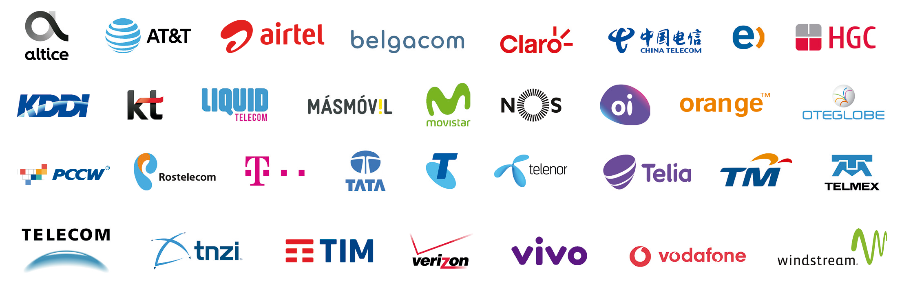

Interconexões

Parceiros

Com início em 1998 oferecendo serviços de voz no Japão, a divisão internacional Telecall Wholesale foi criada com o objetivo de apoiar o setor de varejo da empresa. Desde seu lançamento, a Telecall Wholesale sempre teve muita pressão interna para oferecer serviços de alta qualidade com tarifas competitivas em um mercado extremamente competitivo. Com essa filosofia, a Telecall focou no mercado internacional e alcançou uma cobertura global com parceiros estratégicos, obtendo hoje, mais de 600 interconexões com algumas das maiores operadoras do mundo.
Com uma enorme capacidade de lidar com diferentes mercados e culturas, a Telecall Wholesale pôde apoiar e adaptar-se quando a empresa lançou em 2005, um produto de varejo nos EUA, um dos mercados mais competitivos do mundo.
Outro desafio veio em 2010, quando a Telecall decidiu construir sua própria rede de fibra óptica na cidade do Rio de Janeiro, no Brasil, e começou a oferecer serviços empresariais de voz e dados.
Em um curto espaço de tempo a Telecall vem ganhando respeito nacional e internacional, e fez história ao participar com muito sucesso nos Jogos Olímpicos de 2014 no Brasil e do Rock in Rio em 2017.
Após quase 20 anos de sucesso e crescimento exponencial, a Telecall Wholesale é conhecida hoje como uma Global Carrier, com sólidas relações comerciais, capaz de se adaptar e lidar com os constantes desafios e mudanças do mundo dos negócios.